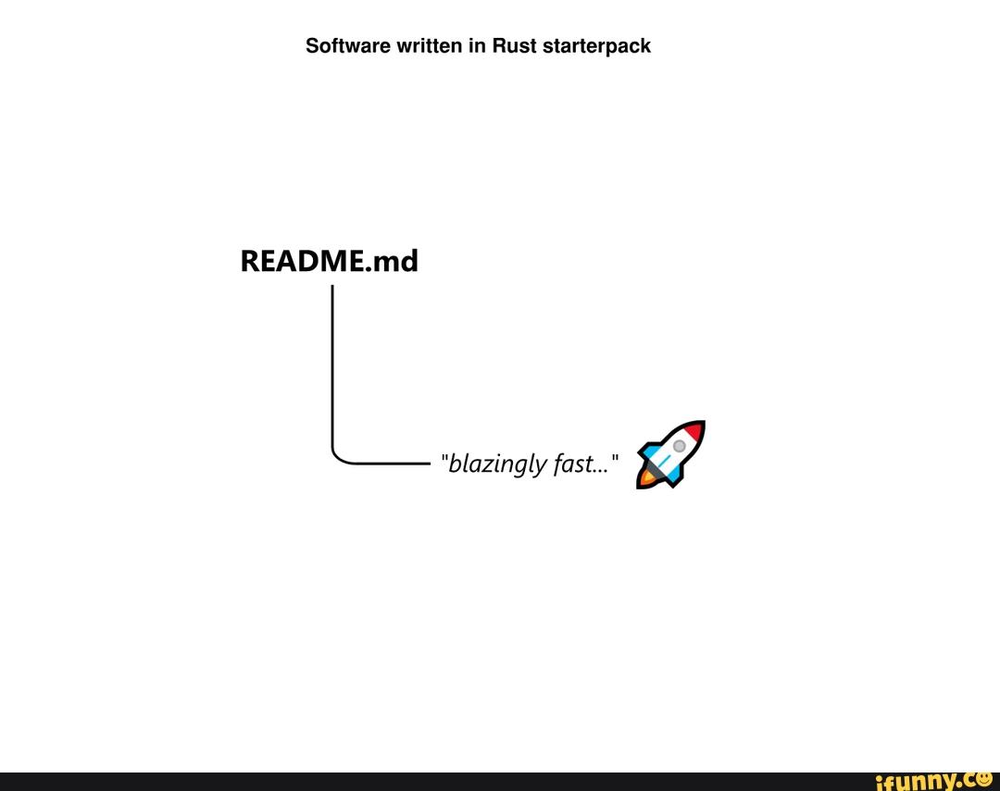
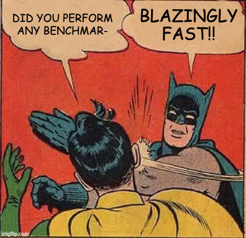
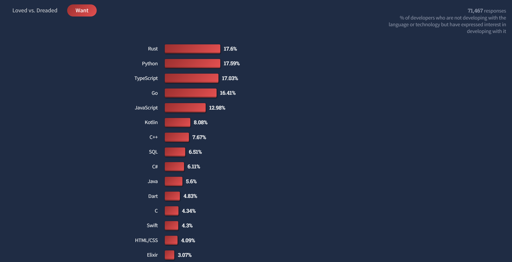
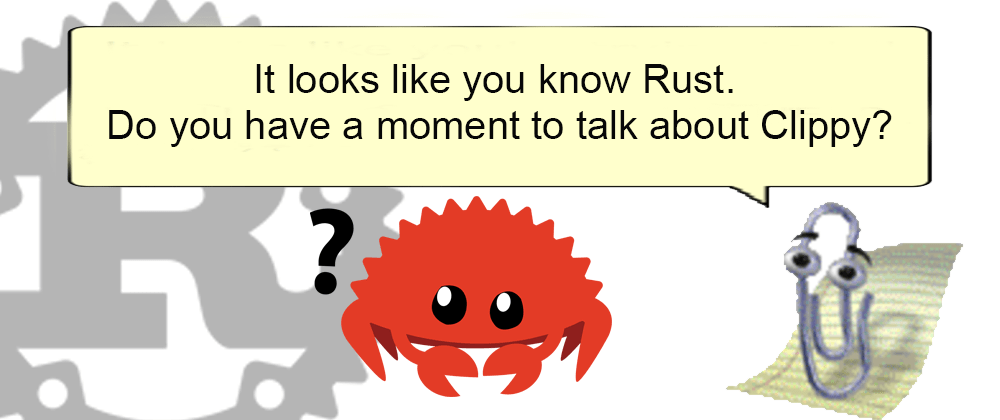
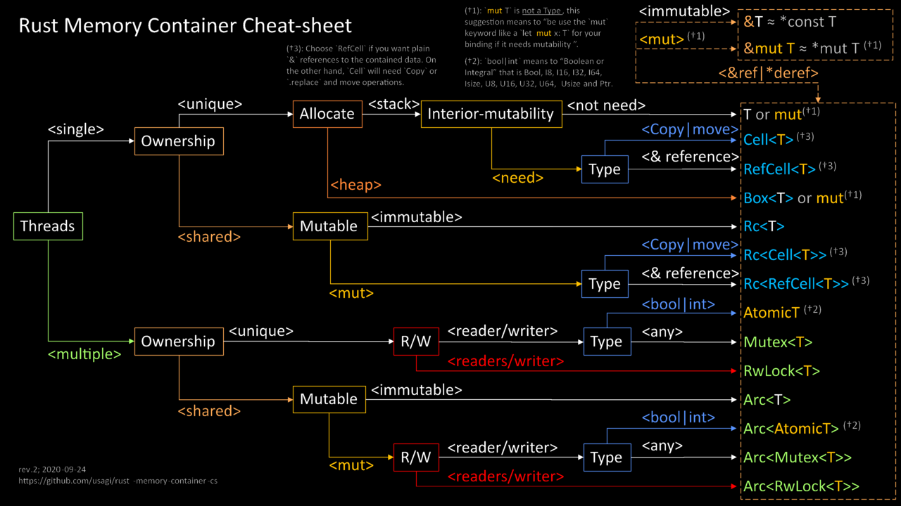

Rust
A Bird's Eye View
Or a crab's (ü¶Ä) eye view?

14th March 2023
Cloud & DevOps meetup (EPAM Systems Budapest Office)
whoami
Balazs Sandor Mracsko
Delivery Manager @EPAMSystems
- Solution Architect
- DevOps Engineer
- Java Developer
- Kotlin Developer
- Rust Developer
- etc.
Agenda
- Rust History
- Why Rust?
- Are we there yet?
- What's the catch?
Rust History
- 2006 - Personal project of Graydon Hoare (Mozilla Research)
- 2009 - Mozilla began sponsoring the project
- 2015 - (15th May) Rust 1.0
- 2020 - Mozilla layoffs
- 2021 - Rust foundation
Why Rust?
Hello World
fn main() {
println!("Hello, world!");
}
Hello, world!
Why Rust? - Performance

Java, Python, JavaScript, C#, PHP, etc.
AWS Lambda battle 2021: performance comparison for all languages (cold and warm start)
Java, Python, JavaScript, C#, PHP, etc.
AWS Lambda battle 2021: performance comparison for all languages (cold and warm start)

The Computer Language 23.03 Benchmarks Game - Rust versus Go fastest performance

C
Which is faster: Rust or C? Let’s find out who is the Usain Bolt of programming world.
C++
The Computer Language 23.03 Benchmarks Game - Rust versus C++ g++ fastest performance

Why Rust? - Safety
⚠️
Memory safety
⚠️⚠️⚠️Memory safety is extremely important⚠️⚠️⚠️
Microsoft: Why Rust for safe systems programming
"... roughly 70% of the security issues that the MSRC assigns a CVE to are memory safety issues. This means that if that software had been written in Rust, 70% of these security issues would most likely have been eliminated."
Mozilla: Implications of Rewriting a Browser Component in Rust
"Over the course of its lifetime, there have been 69 security bugs in Firefox’s style component. If we’d had a time machine and could have written this component in Rust from the start, 51 (73.9%) of these bugs would not have been possible. While Rust makes it easier to write better code, it’s not foolproof."
Memory Management Model
| Language | Memory Management |
|---|---|
| Java | Garbage collection |
| Python | Reference counting & Garbage collection |
| JavaScript | Garbage collection |
| C# | Garbage collection |
| C / C++ | Manual memory management |
| Swift | Reference counting |
| Go | Garbage collection |
| Rust | Ownership and borrowing & Optional reference counting |
Manual Memory Management Issues
- Buffer overflow
- Use after free
- Wild pointer
- Double free
- Invalid free
- etc.
Ownership
The Rust Programming Language Book, Chapter: Understanding Ownership
"Ownership is Rust’s most unique feature and has deep implications for the rest of the language. It enables Rust to make memory safety guarantees without needing a garbage collector, so it’s important to understand how ownership works. In this chapter, we’ll talk about ownership as well as several related features: borrowing, slices, and how Rust lays data out in memory."
Ownership Rules
- Each value in Rust has an owner.
- There can only be one owner at a time.
- When the owner goes out of scope, the value will be dropped.
Ownership example
fn main() {
let hello = String::from("Hello, world!");
let hello2 = hello;
println!("{hello}");
}
error[E0382]: borrow of moved value: `hello`
--> src/main.rs:4:16
|
2 | let hello = String::from("Hello, world!");
| ----- move occurs because `hello` has type `String`, which does not implement the `Copy` trait
3 | let hello2 = hello;
| ----- value moved here
4 | println!("{hello}");
| ^^^^^ value borrowed here after move
|
= note: this error originates in the macro `$crate::format_args_nl` which comes from the expansion of the macro `println` (in
Nightly builds, run with -Z macro-backtrace for more info)
help: consider cloning the value if the performance cost is acceptable
|
3 | let hello2 = hello.clone();
| ++++++++
Ownership example
fn print_hello(name: String) {
println!("Hello, {name}!")
}
fn main() {
let world = String::from("world");
print_hello(world);
println!("{world}");
}
error[E0382]: borrow of moved value: `world`
--> src/main.rs:8:16
|
6 | let world = String::from("world");
| ----- move occurs because `world` has type `String`, which does not implement the `Copy` trait
7 | print_hello(world);
| ----- value moved here
8 | println!("{world}");
| ^^^^^ value borrowed here after move
|
note: consider changing this parameter type in function `print_hello` to borrow instead if owning the value isn't necessary
--> src/main.rs:1:22
|
1 | fn print_hello(name: String) {
| ----------- ^^^^^^ this parameter takes ownership of the value
| |
| in this function
= note: this error originates in the macro `$crate::format_args_nl` which comes from the expansion of the macro `println` (in
Nightly builds, run with -Z macro-backtrace for more info)
help: consider cloning the value if the performance cost is acceptable
|
7 | print_hello(world.clone());
| ++++++++
Borrowing
fn print_hello(name: &String) {
println!("Hello, {name}!")
}
fn main() {
let world = String::from("world");
print_hello(&world);
println!("{world}");
}
Hello, world!
world
The Rustonomicon - The Dark Arts of Unsafe Rust
unsafe {
//...
}
Why Rust? - Fearless Concurrency
Why Rust? - Sustainability
Sustainability with Rust
Why Rust? - Error Messages
Error Messages
fn main() {
println("Hello, world!");
}
error[E0423]: expected function, found macro `println`
--> src/main.rs:2:5
|
2 | println("Hello, world!");
| ^^^^^^^ not a function
|
help: use `!` to invoke the macro
|
2 | println!("Hello, world!");
| +
Error Messages
The Rust Programming Language Book, Chapter: Fearless Concurrency
error[E0277]: `Rc<Mutex<i32>>` cannot be sent between threads safely
--> src/main.rs:11:36
|
11 | let handle = thread::spawn(move || {
| ------------- ^------
| | |
| ______________________|_____________within this `[closure@src/main.rs:11:36: 11:43]`
| | |
| | required by a bound introduced by this call
12 | | let mut num = counter.lock().unwrap();
13 | |
14 | | *num += 1;
15 | | });
| |_________^ `Rc<Mutex<i32>>` cannot be sent between threads safely
|
= help: within `[closure@src/main.rs:11:36: 11:43]`, the trait `Send` is not implemented for `Rc<Mutex<i32>>`
note: required because it's used within this closure
--> src/main.rs:11:36
|
11 | let handle = thread::spawn(move || {
| ^^^^^^^
note: required by a bound in `spawn`
Why Rust? - Language Features

Error handling
pub enum Result {
Ok(T),
Err(E),
} Error handling
fn main() {
let string = String::from("23");
let value = string.parse::<i32>();
match value {
Ok(x) => println!("Parsed value: {x}"),
Err(_) => println!("Cannot parse integer from string: '{string}'"),
}
}
Parsed value: 23
Error handling
fn main() {
let string = String::from("invalid value");
let value = string.parse::<i32>();
match value {
Ok(x) => println!("Parsed value: {x}"),
Err(_) => println!("Cannot parse integer from string: '{string}'"),
}
}
Cannot parse integer from string: 'invalid value'
There is no null
pub enum Option {
None,
Some(T),
} Pattern matching
let x = 1;
match x {
1 | 2 => println!("one or two"),
3 => println!("three"),
_ => println!("anything"),
}Pattern matching
let x = 'c';
match x {
'a'..='j' => println!("early ASCII letter"),
'k'..='z' => println!("late ASCII letter"),
_ => println!("something else"),
}Pattern matching
let p = Point { x: 0, y: 7 };
match p {
Point { x, y: 0 } => println!("On the x axis at {x}"),
Point { x: 0, y } => println!("On the y axis at {y}"),
Point { x, y } => {
println!("On neither axis: ({x}, {y})");
}
}Match expression
fn main() {
let string = String::from("invalid value");
let value = string.parse::<i32>();
let value = match value {
Ok(x) => x,
Err(_) => 0,
};
println!("Result: {value}");
}
Result: 0
Why Rust? - WebAssembly
WASM (WebAssembly) & WASI (WebAssembly System Interface)
Yew
Wasmtime
fn main() {
println!("Hello, world!");
}
$ rustup target add wasm32-wasi
$ rustc hello.rs --target wasm32-wasi
$ wasmtime hello.wasm
Hello, world!
Why Rust? - Build and dependency management
Dependency management
[package]
name = "hello_world"
version = "0.1.0"
edition = "2021"
[dependencies]
time = "0.1.12"
regex = "0.1.41"Build
$ cargo build
Updating crates.io index
Downloading memchr v0.1.5
Downloading libc v0.1.10
Downloading regex-syntax v0.2.1
Downloading memchr v0.1.5
Downloading aho-corasick v0.3.0
Downloading regex v0.1.41
Compiling memchr v0.1.5
Compiling libc v0.1.10
Compiling regex-syntax v0.2.1
Compiling memchr v0.1.5
Compiling aho-corasick v0.3.0
Compiling regex v0.1.41
Compiling hello_world v0.1.0 (file:///path/to/package/hello_world)Run
$ cargo run
Running `target/hello_world`
Did our date match? trueCommands
cargo buildcargo runcargo checkcargo testcargo cleancargo doccargo newcargo initcargo updatecargo publish
etc.
Why Rust?
- Performance
- Memory safety
- Ownership and borrowing
unsafe- Fearless concurrency
- Error messages
Error<T,E> / Option<T> / match- WebAssembly
- Cargo package manager
etc.
Are we there yet?
Are we there yet? - Maintenance
üõ†Ô∏è
Release cycle
new backward compatible version every 6 weeks
- 1.68.0 (2023-03-09)
- 1.67.1 (2023-02-09)
- 1.67.0 (2023-01-26)
- 1.66.1 (2023-01-10)
- 1.66.0 (2022-12-15)
- 1.65.0 (2022-11-03)
- 1.64.0 (2022-09-22)
- 1.63.0 (2022-08-11)
- 1.62.1 (2022-07-19)
- 1.62.0 (2022-06-30)
- 1.61.0 (2022-05-19)
- 1.60.0 (2022-04-07)
- 1.59.0 (2022-02-24)
- 1.58.1 (2022-01-19)
- 1.58.0 (2022-01-13)
- 1.57.0 (2021-12-02)
...
Editions
- Rust 2015
- Rust 2018
- Rust 2021
Rust foundation
Are we there yet? - Community
üëßüèªüë±ü躂Äç‚ôÄÔ∏èüë®üèªüë®üèæ‚Äçü¶±üë®üèΩüë¥üèªüë®ü躂Äçü¶≤üë©üèæ
Stack overflow survey 2022 - most loved language
Stack overflow survey 2022 - most wanted language
Stack overflow survey 2021 - most loved language
Stack overflow survey 2020 - most loved language
Stack overflow survey 2019 - most loved language
Stack overflow survey 2018 - most loved language
Stack overflow survey 2017 - most loved language
Stack overflow survey 2016 - most loved language
Stack overflow survey 2015 - most loved language
Stack overflow surveys
Most loved
- 2022: 1st place
- 2021: 1st place
- 2020: 1st place
- 2019: 1st place
- 2018: 1st place
- 2017: 1st place
- 2016: 1st place
- 2015: 3rd place
Most wanted
- 2022: 1st place
- 2021: 5th place
- 2020: 5th place
- 2019: 6th place
- 2018: 8th place
- 2017: 10th place
Active open source community
Tools in Rust
| Original | Rust version |
|---|---|
| cat | bat |
| find | fd |
| ps | procs |
| sed | sd |
| du | dust |
| grep | ripgrep |
| top | ytop |
| cd | zoxide |
| Tool | Description |
|---|---|
| starship | Customizable prompt |
| tokei | Code statistics |
| hyperfine | CLI benchmarking tool |
| bandwhich | CLI network utilization tool |
| grex | Generate regex from examples |
| delta | Diff viewer |
| nushell | Shell implemented in Rust |
| zellij | Terminal multiplexers |
Redox OS
Solomon Hykes
Mar 27, 2019
Krustlet & Fermyon
First try: Krustlet
Second try: Fermyon Cloud
Docker & Wasm
WHAT’S NEW
Docker + Wasm = Awesome!
Wasm is a new, fast, and light alternative to the Linux/Windows containers you’re using in Docker today — give it a try with the Docker+Wasm Beta.
Are we there yet? - Production ready?
Meta
A brief history of Rust at Facebook
For developers, Rust offers the performance of older languages like C++ with a heavier focus on code safety. Today, there are hundreds of developers at Facebook writing millions of lines of Rust code.
Programming languages endorsed for server-side use at Meta
Meta’s primary supported server-side languages are Hack, C++, Rust, and Python.
From 2019 to 2022 it has dropped from 76% down to 35% of Android’s total vulnerabilities. 2022 is the first year where memory safety vulnerabilities do not represent a majority of Android’s vulnerabilities.
...
In Android 13, about 21% of all new native code (C/C++/Rust) is in Rust.
...
To date, there have been zero memory safety vulnerabilities discovered in Android’s Rust code.
Supporting the Use of Rust in the Chromium Project
We are pleased to announce that moving forward, the Chromium project is going to support the use of third-party Rust libraries from C++ in Chromium. To do so, we are now actively pursuing adding a production Rust toolchain to our build system. This will enable us to include Rust code in the Chrome binary within the next year.
AWS
Why AWS loves Rust, and how we’d like to helpHere at AWS, we love Rust, too, because it helps AWS write highly performant, safe infrastructure-level networking and other systems software. Amazon’s first notable product built with Rust, Firecracker, launched publicly in 2018 and provides the open source virtualization technology that powers AWS Lambda and other serverless offerings. But we also use Rust to deliver services such as Amazon Simple Storage Service (Amazon S3), Amazon Elastic Compute Cloud (Amazon EC2), Amazon CloudFront, Amazon Route 53, and more. Recently we launched Bottlerocket, a Linux-based container operating system written in Rust. Our Amazon EC2 team uses Rust as the language of choice for new AWS Nitro System components, including sensitive applications such as Nitro Enclaves.
Why has Rust proved so popular at AWS and elsewhere? As mentioned, this comes down to Rust’s cardinal virtues: performance and reliability.
Rust in Linux Kernel
Linux Kernel 6.1 Released, This is What’s NewA major addition to Linux 6.1 is mainline (experimental) support for Rust, the “multi-paradigm, general-purpose programming language” snowballing momentum across the open source landscape. Though small, this initial batch of bringup makes good on the ambition of letting kernel devs write kernel code in Rust.
Are we there yet? - Ecosystem
üçÉ‚ôªÔ∏èüèûÔ∏èüíöüå±
Rustup: the Rust toolchain installer
üöÄ
Cargo
Cargo is the Rust package manager.
crates.io
Clippy
A collection of lints to catch common mistakes and improve your Rust code.

rustfmt
A tool for formatting Rust code according to style guidelines.
Rust Analyzer
At its core, rust-analyzer is a library for semantic analysis of Rust code as it changes over time. This manual focuses on a specific usage of the library — running it as part of a server that implements the Language Server Protocol (LSP). The LSP allows various code editors, like VS Code, Emacs or Vim, to implement semantic features like completion or goto definition by talking to an external language server process.
What's the catch?
Learning Cliff
Learning Materials
The Rust Programming Language, 2nd Edition
by Steve Klabnik and Carol Nichols
- Rust by Example
- Comprehensive Rust ü¶Ä by Google
- Zero To Production In Rust
- This Week in Rust
- Error Messages, docs.rs, YouTube, Blogs, etc.
Fighting the borrow checker
ü§º‚Äç‚ôÇÔ∏èü§º‚Äç‚ôÄÔ∏èüèÜ
Compilation time
Types
&T&mut TBox<T>Rc<T>Cell<T>
RefCell<T>Ref<T>RefMut<T>Weak<T>
Rc<RefCell<T>>Mutex<T>Arc<T>Arc<Mutex<T>>
...
Types
String Types
Rust #8: StringsStringOsStringCStringPathBufCow<T>
&str&OsStr&CStr&Path
Async / Await
Summary
- Rust is a fast and efficient language
- Friendly and eager community
- Supported by big companies
- Lot of potential (Linux Kernel, Embedded Devices, WASM Containers, etc.)
We hope you give it a try
References
Presentation engine: reveal.js (4.4.0)
For each slide, references can be found
- as a link on the slide or,
- mentioned in the notes on the "speaker view" (can be activated by pressing the 's' key)